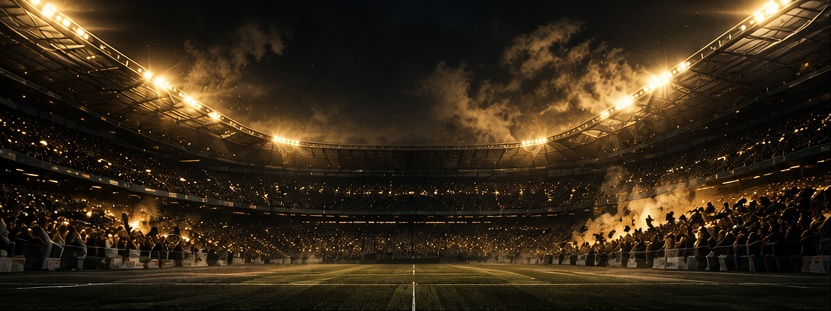
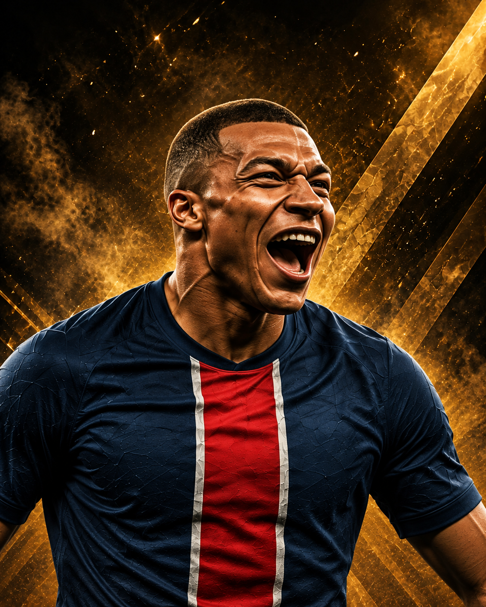
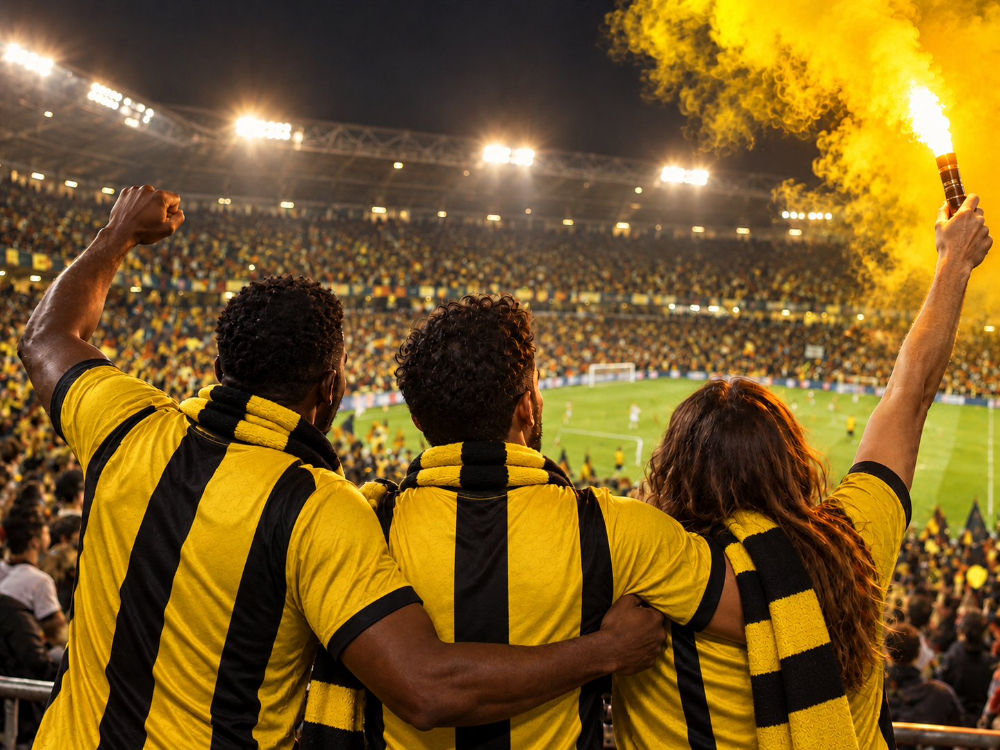

CRISTIANO
RONALDO
LA DISCIPLINE. LE TRAVAIL. LA LÉGENDE.
DÉCOUVRIR SA CARRIÈRE

TROIS JOUEURS, TROIS LÉGENDES
AU PLUS PRÈS DE NOS STARS, PAR L'AMOUR DU MAILLOT ET DU BEAU JEU.
LA DISCIPLINE. LE TRAVAIL. LA LÉGENDE.
DÉCOUVRIR SA CARRIÈRE

LA VITESSE. LE TALENT. L’AVENIR.
DÉCOUVRIR SA CARRIÈRE
LA PUISSANCE. L’EFFICACITÉ. L’INSTINCT.
DÉCOUVRIR SA CARRIÈRE

Au cœur du football, il y a les joueurs… et ceux qui vibrent pour eux. Dans les tribunes, les supporters se rassemblent, chantent et partagent la même ferveur. Partout dans le monde, cette passion crée des liens uniques et fait naître des souvenirs inoubliables : l’exultation d’un but, l’espoir d’une victoire, l’émotion de chaque match.
Ilyess, Marwan et Adrien sont heureux de vous accueillir sur leur site pour partager cette passion et faire vivre, ensemble, l’histoire de nos légendes.